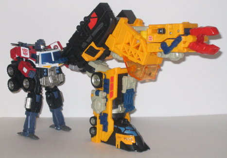
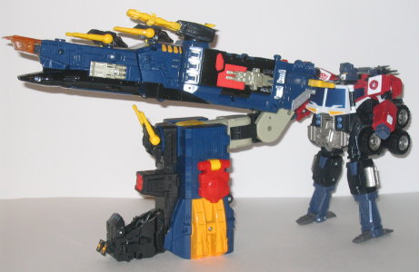
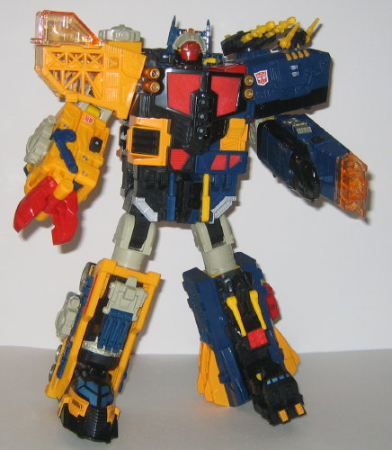
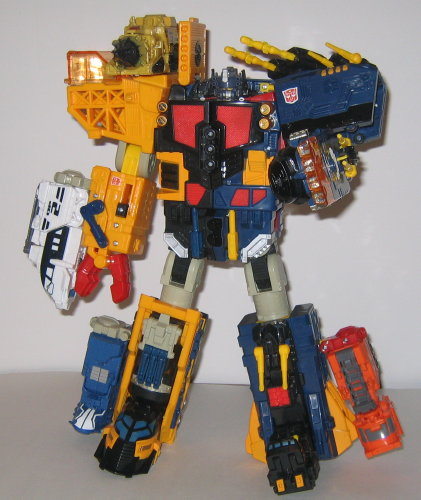

Omega Supreme's "vehicle
mode" actually consists of two seperate vehicles, so I'll be reviewing
each in turn. You can technically combine both of these vehicles to form
a "Cybertronian super-train", but it looks as much like a train as I look
like a T-Bone steak. It's just the crane part connnected to the back end
of the battleship, nothing more. And the connection doesn't hold very well,
anyways, so you're better off just playing with the two vehicles seperately.
I will say this, though- this has to be the longest vehicle mode is the
history of the Transformers. It's gotta be about 3 feet long.
Anyways, onto the individual
vehicles themselves. Half of Omega Supreme's robot mode forms a Cybertronian
crane... thing. I really don't know how else to describe it. There's a
hauler vehicle on the front, pulling a large treaded vehicle part behind
it that has a crane arm on top of it. The crane arm is really obviously
Omega Supreme's right hand, though, and looks rather playskoolish, actually.
The thing that really bugs me about this mode, however, is that it's basically
just half of Omega's robot mode lain on its side. With the exception of
straightening out his leg, and pushing in one other panel, you literally
do nothing else. It's way too simple for this large of a toy. However,
that aside, the toy has wonderful paint detailing, and pretty good mold
detailing for the most part, too. You can see robotic panels and circuits
all over him. I also really like the overall look of the hauler part of
this mode- it's really sleek and futuristic. One thing that puzzles me
about this part of the vehicle mode, however, is that on top of the hauler
are three little finger-like.... things. They can move indivudally at two
places each, but I have no idea what they're supposed to be, and they aren't
really used in any mode. The crane's lone gimmick is a lever on the crane
arm- push it backward to have the upper part of the arm lunge forward,
supposedly to crab something. The gear that operates it can get stuck,
though, leaving you to get it back on track manually. It should be noticed
that one of the wheels on the hauler is just solid yellow plastic, because
of the small panel on top of it that is used in Powerlinx mode. I wish
they would have at least painted it to look like the other wheels, though...
Omega Supreme's black Autobot Powerlinx symbol is on the top of the transparent
orange cockpit on the rear of this mode. The cockpit is also supposed to
hold Omega Supreme's "headmaster" (reviewed in detail later), but the headmaster
doesn't really fit in there. Um, poor planning, anyone?
Omega Supreme's other
half becomes a battleship. Now THIS is more like it. With the exception
of its obvious asymmetry, it's a pretty solid mode, with no real robot
extras at all. The transformation is also a bit more complex than the crane's,
although not to the point where I'd consider it involved. The color scheme
is pretty much the opposite of the crane's- the battleship is mostly dark
blue, while the crane is mostly yellow. They both share many colors, however,
though they're in drastically different amounts. The battleship does share
the crane's excellent mold and paint detailing, which is a definite plus.
It also houses Omega's electronics. Press the small black button near the
front of the battleship, and a "firing" sound is emitted, and the transparent
orange front part blinks red for a few seconds. Also, if you turn Omega's
front three turrets all the way to one side or the other by the rotary
dial located on the battleship's side, another firing sound is emitted.
It's pretty cool, without getting annoying or in the way of anything. The
largest turret also can independently fire two missiles, via the typical
spring-launcher setup. The main tower in the center of the battleship can
also fold apart to form a "throne" of sorts for Omega's headmaster. And
he fits perfectly in the seat, so no problems there. Oh, and the tower
also has two little rotating solar panels on top of it. Nifty. Omega's
Autobot spark crystal is on the top of this mode, just slightly to the
rear of the transparent orange piece at the very front.
Alright, now on to Omega
Supreme's "headmaster". Yep, just like many of the later G1 toys, Omega
Supreme has a little guy (about the size of a Mini-Con) that transforms
into his head. This little headmaster has decent articulation, as he can
move at the knees, hips, and arms, and the latter two are on ball joints.
The arm joints are rather loose, though, and the headmaster does suffer
from too little paint detailng. Even though the headmaster is a bit back-heavy,
he can still stand up pretty easily, since he has long feet. The headmaster
also has cool knife-shaped guns on the back of his hands, so he looks like
he could do at least some moderate damage by himself. The really cool thing
about this guy, though, is that he's a pretty obscure nod to Transfans-
he's very similar in looks to Omega Spreem (heh), the Japanese-only Action
Master released near the end of G1. That's definitely appreciated.
In addition, the battleship
and crane parts can also form their own "turret modes" for Optimus Prime
or another Autobot to handle. However, both of these "turrets" look far
too much like their vehicle modes twisted into a slanted "L" shape- and
indeed, that's just what they are. No extra features are available in these
turret modes or anything. They're unimpressive at best, and unexcusably
lazy at worst.


Omega Supreme's robot
mode, however, is really really cool, and probably his main selling point.
It becomes especially clear in this mode just how massive this guy really
is- in fact, he may even be a little bigger than
Unicron
.
He also has good articulation- he can move at pretty much any major point,
minus his waist (which would be impossible with his transformation anyways).
He's very asymmetrical- a throwback to G1 Omega Supreme- and has a big
claw for his right hand, which is, again, a throwback. His left hand, however,
is more questionable. It looks kinda like a hand, but it can move or close
or do anything. It and his lower arm are just one solid piece, which I
think was kinda poor planning. Another downside is that it's hard to get
him to stand straight in this mode, due to the fact this his left leg is
a little wider than his right one. As such, he can't keep them both in
a "straight downwards" position because of their proximity to each other,
so you're always stuck angling at least one leg slightly. His head looks
great, with lots of mold detailing, and is a definitely throwback to his
G1 toy, what with the visor over the red face and whatnot. His antennae,
which are made of his headmaster's arms, don't really lock into anything,
though, so they tend to flop around a little too easily. An especially
cool treat in this mode is that under Omega's headmaster head, he has another,
smaller "
Beast Machines Scavenger
"-style
head-- i.e., really small, flat, and with only eyes and no mouth. It really
conveys the sense that Omega Supreme is just a dumb suit of armor until
his headmaster-- his "intelligence"- combine with him. Overall, it's a
solid mode, with good proportions, great stability (it takes a bit of force
to seperate him into his two halves again), great detailing, and great
articulation.
Yet one more gimmick
Omega Supreme has is that he can "Powerlinx" with
Optimus
Prime's
core robot mode to form Powerlinx Omega Supreme. However, it's
one of the poorest Powerlinx forms of them all, and that's really saying
something. Basically what you get is Omega Supreme's body with Optimus
Prime's head and Prime's drones hanging off Omega's various body parts
while forming nothing useful of their own. It's REALLY poor, and I wouldn't
even recommend wasting the small amount of time it takes to combine them.
Omega Supreme has an
excellent robot mode and a great battleship mode, but the back half of
his crane mode, as well as his "extra" turret modes and Powerlinx modes,
are pretty poor. He's still a good toy, and worth $50, but he doesn't come
close to passing up Unicron. Mildly recommended.
Review by Beastbot